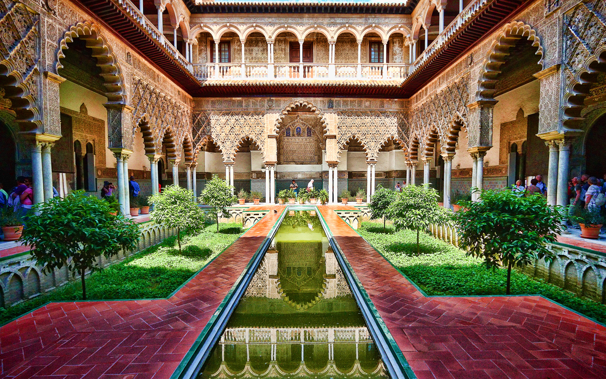
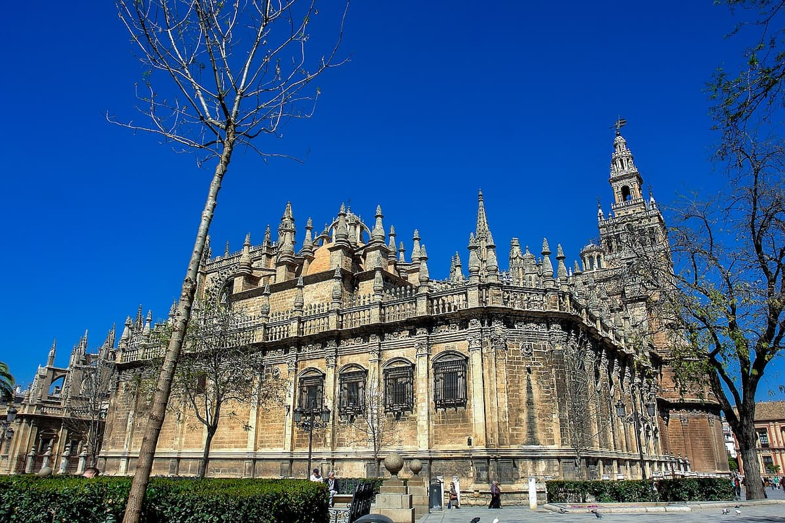
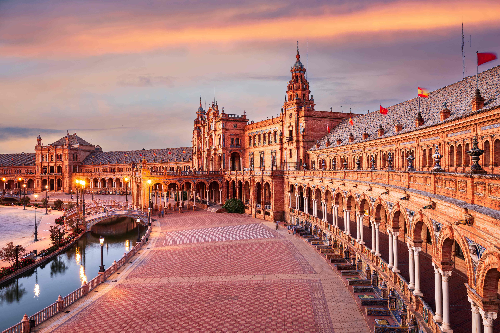

The Alcázar of Seville
stunning Moorish palace with intricate tile work, beautiful gardens, and rich history, it’s one of Spain’s most impressive landmarks.

stunning Moorish palace with intricate tile work, beautiful gardens, and rich history, it’s one of Spain’s most impressive landmarks.

The largest Gothic cathedral in the world, known for its impressive architecture and the tomb of Christopher Columbus.

A grand semicircular plaza with a canal, beautiful bridges, and colorful tilework, offering stunning views and a peaceful atmosphere.